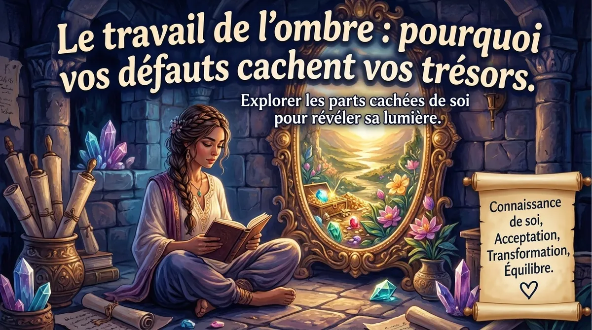
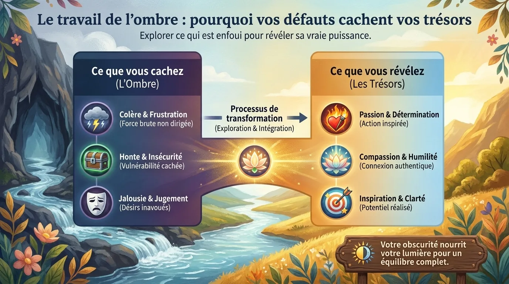
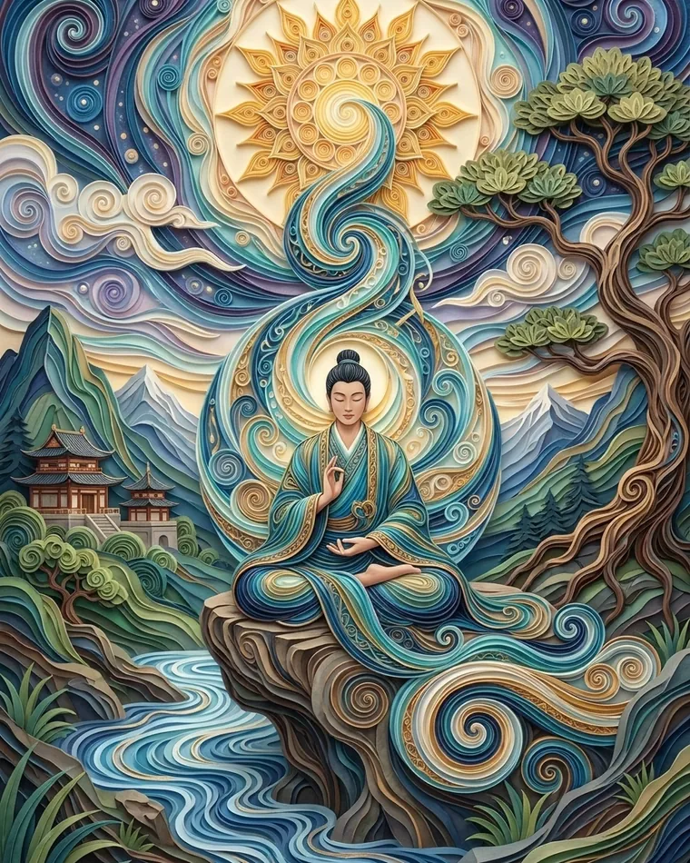
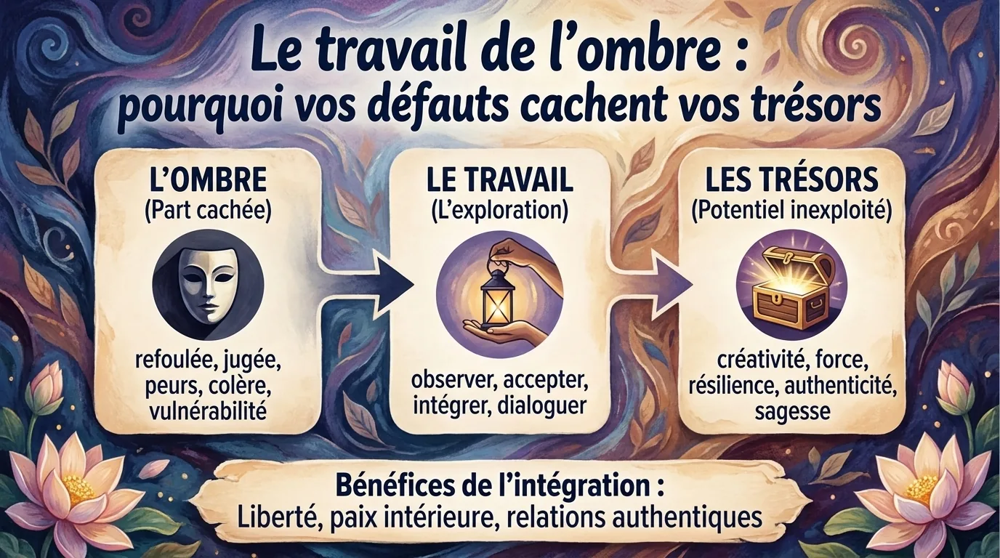

Travail de l’ombre selon Jung : pourquoi vos défauts cachent parfois vos trésors

L’ombre selon Jung n’est pas votre côté obscur. Projection, défauts qui sont des qualités mal réglées et trois exercices pour intégrer votre ombre.
Votre « ombre » n’est pas forcément votre côté obscur avec musique dramatique
Le travail de l’ombre, ou shadow work, est devenu extrêmement populaire dans le développement personnel, les réseaux sociaux et certaines pratiques de méditation. Pourtant, le concept vient surtout de la psychologie analytique de Carl Gustav Jung, pour qui l’ombre désigne les aspects de nous-mêmes que notre personnalité consciente reconnaît difficilement, rejette, dissimule ou considère incompatibles avec l’image que nous voulons présenter.
Autrement dit, votre ombre n’est pas nécessairement composée de pulsions terrifiantes enfermées au sous-sol de votre psychisme.
Elle peut contenir votre colère.
Votre jalousie.
Votre envie d’être reconnu.
Votre vulnérabilité.
Mais aussi votre ambition, votre créativité, votre sensualité, votre capacité à dire non ou votre désir de prendre davantage de place.
C’est là que le sujet devient beaucoup plus intéressant.
Imaginez un enfant extrêmement spontané à qui l’on répète :
« Arrête de faire ton intéressant. »
Il peut apprendre à devenir discret.
Vingt ans plus tard, il admire secrètement les personnes charismatiques mais les trouve également « insupportablement prétentieuses ».
Sa capacité à se montrer n’a pas forcément disparu.
Elle peut avoir été reléguée dans l’ombre.
Le travail de l’ombre jungien consiste donc moins à éliminer ce qui nous dérange qu’à comprendre :
« Quelle partie de moi ai-je cessé d’autoriser ? »
Et parfois, derrière le défaut que nous redoutons se cache précisément une qualité dont nous manquons.
Projection : pourquoi certaines personnes nous agacent avec une efficacité presque artistique
Une idée centrale associée au travail de l’ombre est celle de projection psychologique.
Nous pouvons attribuer à l’extérieur des caractéristiques, intentions ou émotions que nous reconnaissons mal chez nous-mêmes.
Attention : cela ne signifie pas que tout ce qui vous agace chez quelqu’un est forcément votre propre défaut caché.
Si votre voisin met une perceuse en route tous les dimanches à 7 h 12, il est possible que le problème principal soit réellement votre voisin.
Mais certaines réactions particulièrement disproportionnées méritent d’être examinées.
Vous voyez une personne très sûre d’elle et pensez immédiatement :
« Elle se croit vraiment supérieure à tout le monde. »
Question intéressante :
qu’est-ce que sa confiance déclenche chez vous ?
Peut-être aucune projection.
Peut-être est-elle réellement arrogante.
Mais peut-être qu’une partie de vous aimerait également oser parler avec autant d’assurance.
Même mécanisme avec la jalousie.
Vous regardez quelqu’un publier son projet artistique et ressentez une irritation surprenante.
Au lieu de conclure immédiatement :
« Cette personne est narcissique »,
essayez :
« Qu’est-ce qu’elle s’autorise que je ne m’autorise pas ? »
Cette question est l’une des plus puissantes du shadow work.
Parce que l’ombre ne contient pas seulement ce que nous considérons comme mauvais.
Elle peut également contenir ce que certains auteurs post-jungiens appellent parfois une ombre dorée : capacités, aspirations ou qualités positives que nous avons appris à désavouer.

Vos défauts peuvent être des qualités qui ont perdu leur bouton de volume

Prenons quelques traits généralement considérés comme négatifs.
Colère
Version incontrôlée :
explosion, agressivité, conflit.
Mais que trouve-t-on derrière ?
Capacité à détecter une limite franchie.
Énergie pour se défendre.
Refus de l’injustice.
Le travail ne consiste donc pas à devenir « quelqu’un qui n’est jamais en colère ».
Il consiste à apprendre :
colère + conscience + régulation = capacité à poser une limite.
Égoïsme
Dans sa forme extrême, il peut évidemment nuire aux autres.
Mais une personne qui s’est construite autour du sacrifice permanent peut appeler « égoïsme » le simple fait de prendre une soirée pour elle.
Son ombre contient peut-être :
- repos ;
- priorités personnelles ;
- autonomie.
Jalousie
Elle devient problématique lorsqu’elle mène au contrôle ou à l’hostilité.
Mais elle peut également révéler :
- un besoin ;
- une peur ;
- une aspiration.
« Je suis jaloux de sa carrière » peut devenir :
« Je réalise que j’ai besoin de davantage de création dans mon propre travail. »
Voilà l’intérêt du travail de l’ombre.
Il ne transforme pas magiquement chaque défaut en qualité merveilleuse.
Il cherche la fonction psychologique cachée derrière le comportement.
Trois exercices de travail de l’ombre qui ne nécessitent pas 47 bougies noires
Exercice 1 — La personne qui vous énerve
Choisissez quelqu’un qui déclenche régulièrement une réaction forte.
Écrivez trois caractéristiques qui vous dérangent.
Par exemple :
- arrogant ;
- bruyant ;
- cherche l’attention.
Puis demandez :
« Dans quelles circonstances ai-je peur d’être exactement comme cela ? »
Et :
« Existe-t-il une version saine de cette caractéristique dont j’aurais besoin ? »
« Chercher l’attention » pourrait devenir :
oser être visible.
« Arrogant » pourrait cacher :
affirmation de soi.
Le but n’est pas d’absoudre la personne.
Il est d’utiliser votre réaction comme information.
Exercice 2 — Le compliment impossible
Écrivez trois qualités que vous admirez énormément chez d’autres personnes.
Créativité.
Courage.
Charisme.
Puis demandez :
« Pourquoi ai-je du mal à reconnaître même 10 % de cette qualité chez moi ? »
C’est le travail de l’ombre positive.
Exercice 3 — La phrase interdite
Complétez rapidement :
« Je ne devrais jamais être quelqu’un qui… »
Prenez cinq réponses.
Puis examinez chacune.
Certaines correspondent à de vraies valeurs.
« Je ne veux jamais humilier quelqu’un volontairement. »
Très bien.
Mais d’autres révèlent des interdits plus personnels :
« Je ne devrais jamais décevoir quelqu’un. »
Voilà une phrase à explorer.
Parce qu’une vie où personne n’est jamais déçu de vous ressemble souvent à une vie où vous dites oui beaucoup trop souvent.

Le shadow work n’est pas une chasse aux traumatismes cachés
Une dérive fréquente du travail de l’ombre moderne consiste à interpréter chaque réaction comme la preuve d’un traumatisme enfoui.
Vous procrastinez ?
Trauma.
Vous n’aimez pas les appels téléphoniques ?
Trauma.
Vous avez oublié d’acheter du lait ?
Probablement votre enfant intérieur abandonné en 1997.
C’est beaucoup trop simpliste.
Nos comportements sont influencés par :
- apprentissage ;
- tempérament ;
- habitudes ;
- fatigue ;
- contexte ;
- expériences familiales ;
- croyances ;
- stress ;
- et parfois traumatisme.
Un exercice d’introspection ne permet pas de diagnostiquer seul l’origine d’un comportement.
De même, il faut rester prudent avec les souvenirs qui apparaissent pendant une visualisation profonde. La mémoire humaine est reconstructive et une image forte n’est pas automatiquement la preuve d’un événement oublié.
Si le travail introspectif fait émerger des souvenirs traumatiques connus, des réactions de panique, une dissociation importante ou une détresse persistante, il devient pertinent de travailler avec un professionnel qualifié plutôt que de pousser seul plus profondément.
L’objectif du travail de l’ombre est l’intégration.
Pas l’excavation compulsive.
Intégrer son ombre : passer de « je ne suis pas comme ça » à « j’ai aussi cette capacité »
L’intégration ne signifie pas agir sur toutes ses impulsions.
Reconnaître :
« Une partie de moi aimerait envoyer tout le monde promener aujourd’hui »
ne signifie pas envoyer immédiatement un message collectif à vos collègues.
Cela signifie simplement ne plus avoir besoin de prétendre que cette émotion n’existe pas.
Cette nuance libère beaucoup d’énergie.
Lorsque nous devons constamment maintenir une image parfaite de nous-mêmes :
- toujours généreux ;
- toujours calme ;
- toujours spirituel ;
- toujours raisonnable ;
une quantité impressionnante d’effort psychologique sert à censurer ce qui ne correspond pas au personnage.
Le travail de l’ombre remplace progressivement :
« Je ne suis jamais jaloux »
par :
« Je peux ressentir de la jalousie et choisir ce que j’en fais. »
C’est beaucoup plus solide.
Et paradoxalement, accepter une émotion augmente souvent notre capacité à ne pas lui obéir automatiquement.
L’ombre ne disparaît donc pas.
Elle cesse simplement de conduire depuis le coffre.
Questions fréquentes
Qu’est-ce que l’ombre selon Jung ?
Elle désigne, dans la psychologie analytique, des aspects de la personnalité que le moi conscient reconnaît difficilement ou rejette. Elle peut contenir aussi bien des traits perçus comme négatifs que des capacités positives insuffisamment reconnues.
Comment commencer le travail de l’ombre ?
Observer ses réactions disproportionnées, ses jugements répétitifs, les qualités que l’on envie et les comportements que l’on s’interdit constitue un bon point de départ.
Le travail de l’ombre est-il une thérapie scientifiquement validée ?
Le « shadow work » n’est pas un protocole clinique standardisé comparable à une psychothérapie validée. Certaines idées peuvent néanmoins être rapprochées de techniques modernes travaillant sur les schémas, les émotions, l’imagerie et l’auto-observation.
Faut-il travailler seul sur des traumatismes avec le shadow work ?
Pas nécessairement. Lorsque l’introspection déclenche une forte détresse, des souvenirs traumatiques, des symptômes dissociatifs ou une perturbation durable du quotidien, l’accompagnement d’un professionnel formé est préférable.
Pratiquer avec l’application
Envie de pratiquer plutôt que de lire ?
Tout ce que décrit cet article se pratique dans MeditaDream, application de méditation gratuite : 129 méditations guidées et 17 mondes immersifs en français, sans abonnement, sans publicité, sans compte, et tout fonctionne hors ligne.
✦ Découvrir l'application gratuite